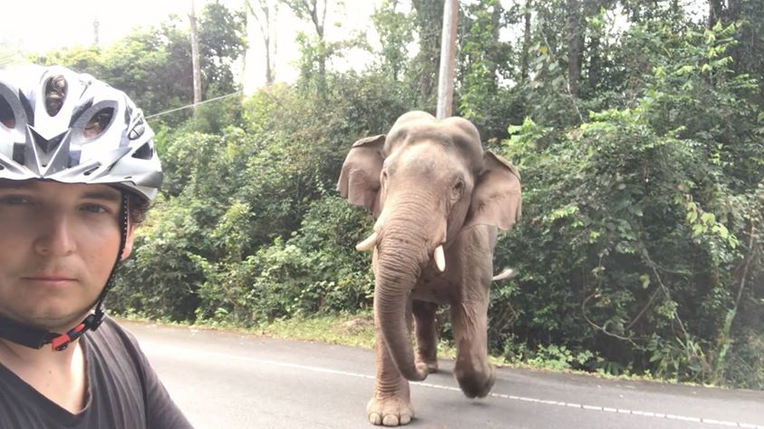

Rok na cestě kolem světa
Je 10.7.2017, Den D. V den mých 30. narozenin jsem se rozhodl vycestovat na dlouhou cestu kolem světa. Zrušil jsem nájem, prodal jsem auto a zbavil se všeho ostatního. Zůstal jen přibližně 6 kg vážící balíček. Jediné dvě dražší věci, které mám, je 5 let starý MacBook Air 11” a telefon, vše ostatní nemá hodnotu. Původně jsem chtěl jet s tímto baťůžkem, ale prý se větve stromů nesmí brát do letadla.
Jako první destinaci jsem si vybral Mongolsko. Hned po příletu jsem zamířil na vrchol Zaisan, odkud je možné vidět celé hlavní město Mongolska. Proč? Odpoví tyhle dvě fotky. Obě jsou ze stejného místa. Na té spodní jsem já, na té horní je můj otec (v bílém kabátu). Obě fotky dělí více než 40 let. Můžete vidět, jak se město za tu dobu změnilo.

V Ulaanbaataru jsem strávil jen chvíli a vydal se na venkov. Souhra náhod mě dovedla až někam do pouště Gobi, daleko mimo civilizaci, kde jsem strávil pár dní s mongolskou rodinou.

Bydlel jsem ve své jurtě. V zimě je tady i více než -50 stupňů a sprchu tady nenajdete. Pokud se potřebujete umýt, musíte jít 3 km k malému jezeru. Lidé se tam chodí umýt jednou za měsíc.
Naučil jsem se zde třeba jezdit na velbloudovi. Tady neslouží pro turisty, ale používá se v každodenním životě. Tady jsme šli zahnat ovce nebo co to bylo po celodenní pastvě zpět do ohrady.
Jednoho dne mě také nainstalovali na koně. Seděl jsem na něm poprvé v životě.
“Dobrý? Fajn, tak můžeme!”, řekli mi po chvíli klidné chůze a já si následně vyzkoušel, co to znamená, když kůň běží naplno. Nevím, zda je pohled na svět z hřbetu koně skutečně úplně nejhezčí, ale určitě je jeden z nejhezčích.

V Mongolsku jsem poznal jiný svět. Poprvé jsem třeba viděl děti, které od mala fungují samostatně. Probouzejí se s východem Slunce a jdou spát s jeho západem. Nikdo je do postele nežene, nikdo jim nic nepřikazuje, nikdo je neokřikuje. Dělají si už od mala, co chtějí. Tady čtyřletý Amra měl třeba rád skládání Rubikovy kostky (já ji neumím složit ani ve 31).

Cestou zpět jsem si vyzkoušel poprvé v životě stopování. První dva řidiče bylo nutné odmítnout, protože byli totálně namol, takže vyšel až třetí pokus s autem plným Mongolek. Dvě na mě hned po začátku usnuly. Možná kvůli toho, že tam nebyla ta sprcha a vůně potu je omámila.
V Mongolsku jsem navštívil několik míst, ale přibližně polovinu času jsem strávil přímo v Ulaanbaataru. Poprvé v životě jsem využil Airbnb a strávil jsem 2 týdny u Mashi, která mě pravidelně brala do centra a díky ní jsem poznal Mongolsko jinak, než většina ostatních.

V Ulaanbaataru jsem bydlel mimo centrum, v sídlišti, které bylo Mongolsku darováno Sovětským svazem a domy byly postaveny do tvaru SSSR. Bylo to velké vystoupení z komfortní zóny, tyhle paneláky v Česku nemám rád a vyhýbám se jim, ale tady jsem se v nich naučil žít.

Po měsíci v Mongolsku následoval přelet do Pekingu a poté do Xi’anu. Kvůli špatnému počasí byly všechny lety zrušeny a já musel strávit 2 dny na letišti. Trvalo 7 hodin, než jsem se dostal k někomu, kdo mi vystavil novou letenku, protože tisíce lidí obsluhovala jen jedna přepážka. Do Číny jsem navíc přijel bez VPN, takže jsem se dva dny nemohl s nikým spojit, protože Čína všechno blokuje, dokonce i třeba Google Mapy.

Týden v Xi’anu jsem bydlel u mé skvělé hostitelky 默. Celý týden mě provázela Čínou, dozvěděl jsem se vše o běžném životě Číňanů a třeba o tom, jak se Čína proměnila v posledních letech z chudé země do země, kde jsou na jedné straně velmi bohatí lidé v superměstech a na druhé straně velmi chudí lidé bez možnosti dostat se do té vyšší skupiny. Zároveň jsem poznal poprvé někoho, kdo obhajuje cenzuru internetu i to, že Číňané mohou mít maximálně dvě děti (což podporuje většina Číňanů).

Nikde v Asii jsem však nepotkal tolik lidí, kteří by mě zvali na oběd jako právě v Číně. Z Xi’anu jsem jel na jih Číny 2 dny vlakem na jih do Kunmingu a potkal jsem tam mimo jiné tohoto farmáře, který neustále volal anglicky hovořící sestře, přes kterou jsme si povídali.

V Kunmingu jsem potkal drobnou Číňankou 睿, se kterou jsem zde strávil nejlepší dny mého života. Až do dnešního dne za mnou 睿 každý měsíc někam jezdí, už jsme se potkali v 9 různých zemích. Když jsme se setkali poprvé, uměla 4 slova anglicky: happy, unhappy, hungry a full. To bylo velice výhodné, protože jsem na první schůzku přišel o půl hodiny později a ona byla naštvaná, ale neuměla mi to říct.

Díky ní jsem poznal Čínu do detailu. Dokonce mě přesvědčila, abychom si vyzkoušeli karaoke, oblíbenou zábava všech Asiatů, což se nikdy nikomu předtím nepovedlo a nepovede.

Měsíc v Číně uběhl jako voda. V Kunmingu jsem se rozhodl koupit si kolo a dojet s ním až do Bangkoku. Tohle kolo na obrázku to není, to mé jsem dostal bez psa.

A pár dní před vypršením víza jsem vyrazil na cestu směr Vietnam. Tohle je Stone Forest kousek od Kunmingu. Vypadá to hezky, ale to je protože na druhé straně fotky nevidíte několik tisíc Číňanů, kteří sem přijeli taky.
Cesta přes provincii Jün-nan. Kolem paneláků jsou pole. Líbí se mi tyhle kontrasty. Městský život se prodírá vesnicí.
V Číně jsem také poznal to, co mě už provázelo po zbytek cesty po Asii. Jídelní lístky, kterým nerozumím. Někdy pomohou aplikace pro překlad, ale mnohá menu na vesnicích jsou napsána ručně nebo neexistují vůbec a bez čínštiny člověk neví, co si kupuje. Díky tomu jsem občas objevil nová úžasná jídla, jindy bylo nutné vyhradit více času na návštěvu toalety.

Vesnice na jihu Číny kousek od hranice s Vietnamem. Od Kunmingu až na hranice s Vietnamem jsem po několik dní nepotkal nikoho jiného než Číňany.
Poslední cykloden v Číně a 170 km přes hory. Začal jsem v 5 ráno a dojel na hranice v 10 večer téměř bez přestávky. Ubytoval jsem se ve zvláštním hotelu na hranicích s Vietnamem, v pokoji bylo 20 kondomů a hned po příjezdu se ke mně na pokoj dobývala strašně ošklivá Číňanka a ptala se mě, jestli nechci na noc “beauty”. No nechtěl jsem.

Vietnam, třetí země na trase. Srpy a kladiva a budovatelské hesla jsou všude. Děsilo mě to tehdy a děsí mě to i teď.
První dny ve Vietnamu jsem bydlel na hranicích s Čínou, protože za mnou každý víkend jezdila 睿. Poprvé však neměla vietnamská víza, a tak si prostě našla pašeráky, kteří ji přepravili lodí do Vietnamu. Tam jsem ji dva dny ukrýval v hotelu, než ji zase převedli zpět do Číny.
Jednou za mnou přišla Vietnamka a zeptala se mě, zda umím řídit motorku, že mi ji půjčí. Já jsem nikdy motorku neřídil, ale našel jsem nějaká videa na Youtube, podle kterých jsem se to hm … naučil, takže jsem řekl, že umím a dostal jsem motorku.

Motorka mi dala volnost a další dva měsíce jsem strávil na severu Vietnamu...

... uprostřed nádherných vietnamských hor …
… rýžových polí …

.... horských jezer ...
… a mezi množstvím vietnamských etnických skupin.

Přes týden jsem bydlel v různých vietnamských homestay v okolí Sapy a na víkend se vracel do Lao Cai, kde za mnou jezdila 睿. Tenhle homestay uprostřed vietnamských políček stál 90 Kč na noc i se snídaní a množstvím vodky na večer.
Po nějaké době v Lao Cai bylo potřeba pokračovat v cyklojízdě dále. Přibližně 400 km dlouhou cestu do Hanoje mě často doprovázeli malí Vietnamci. Obvykle na mě volali “Hello!”, dvakrát jsem slyšel “I love you!” a jednou i “Fuck you!”.
Po pár dnech jsem dojel do Hanoje, hlavního města Vietnamu, kde jsem bydlel kousek od místa, kudy projíždí vlaky těsně u oken okolních domů.
Během roku jsem také potkal mnoho lidí, kteří mě něco naučili. Třeba Vietnamka Hoa mě několik dní učila kreslit. Když jsem pak plnil zadané úkoly z výtvarné výchovy venku, chodili za mnou ostatní Vietnamci a pozorovali mě, protože si mysleli, že jsem umělec. Ve Vietnamu totiž pouliční malíři nejsou.
Z Hanoje jsme si s 睿 udělali výlet do několika okolních zemí. Třeba do Hong Kongu.

Hong Kong. Město s největší hustotou mrakodrapů na světě.

A na Vánoce do Malajsie, do Kuala Lumpur.

K opicím, které ukradnou vše, co není připevněno.
Štědrý den v Kuala Lumpur. Před rokem by mě ani nenapadlo, že budu slavit české Vánoce v islámské zemi s Číňankou, která bude nosit americkou čepičku Santa Clause.

Těsně po Vánocích mělo vypršet vietnamské vízum, takže jsem vzal kolo a pokračoval dále k hranicím s Laosem. Ten jsem překračoval v naprosté mlze a poprvé jsem hranice přešel nelegálně, protože jsem nebylo vidět ani na krok, musel jsem se vrátit zpět a projít přes pasovou kontrolu. Když jsem se dostal do Laosu, byla už naprostá tma a do nejbližšího ubytování to bylo 30 km. Musel jsem ve tmě pokračovat, neviděl jsem na krok, jen sem tam středovou čáru za svitu měsíce. Kvůli nižší váze nevozím ani přední světlo.
Dobré ráno z Laosu!
Cesta Laosem do hlavního města.

Typické laoské domy po cestě.

Typické laoské děti po cestě.

V Laosu jsem poprvé viděl to, co mě dále provázelo i v Thajsku. Množství buddhistických chrámů. Tohle je Pha That Luang.

V Laosu jsem se zdržel jen chvíli a pokračoval dále přes celé Thajsko až k moři…

… přes tahle thajská políčka …

… nebo přes tahle.

Občas se stávají i špatné věci a v Thajsku jsem musel navštívit nemocnici. Jednoho večera mě napadli dva agresivní psi a pokousali mě na ruce. Protože je v Thajsku vzteklina a tihle psi byli obzvláště agresivní, tak jsem se šel pro jistotu pro injekci. Sestřičky se výborně bavily. Vlastně komukoliv jsem řekl, že mě napadli psi a byl jsem v nemocnici, tak je to rozesmálo.

O pár dní později jsem potkal mnohem vyšší problém, divokého slona, který měl trasu přesně přes místo, kde jsem stál já. Chvíli jsme spolu diskutovali, kdo tady byl dřív a kdo má odejít, no a já jsem se rozhodl projevit dobrou vůli a ustoupit.

A je to tady! Více než 3000 km z Číny až k nejbližšímu thajskému moři! Vždy, když někam dojedu, tak je to při západu Slunce, to už je takový zákon.

Poté jsem strávil pár dní v Bangkoku, ale ten se mi moc nelíbil. Je to taková betonová džungle, všude je hluk a chaos. A projíždět ho na kole je sebevražda.
Po pár týdnech v Thajsku jsem se přesunul zase o zemi dál, na Filipíny. A nezačalo to dobře. Nějakým způsobem jsem se dostal na americkou vojenskou základnu v Cebu a celou jsem ji prošel. Až na konci mě zadrželi vojáci a následoval hodinový výslech, během kterého nemohli pochopit, jak je možné, že mě nikdo nezadržel.
Filipíny shrnuté v jedné fotce.
Já jsem byl taky občas unavený, takže jsem využil tyhle nádherné filipínské autobusy.

A nebo motorové rikši. Na Filipínách jsem se snad poprvé setkal s všudypřítomným okrádáním cizinců. Nepamatuji si na nikoho, kdo by po mně nechtěl několikanásobně vyšší cenu za cokoliv. Za jídlo, za svezení. Tohle je jedna z těch negativních stránek cestování, cizinec je zlaté prasátko, ze kterého se sypou peníze.

Takže jsem raději vzal kolo a vydal se krásnou filipínskou přírodou dále.
Cestou jsem narazil třeba na tehle pár, který mě nechal u sebe několik dní bydlet ve své luxusní rezidenci.
Na Filipíny se hlavně jezdí za tímhle. Tisíce ostrovů a jen na několik z nich jezdí turisté.

Takže když má člověk vlastní dopravní prostředek, ocitne se často na kilometrových plážích úplně sám.
Případně s nějakými psy. Zase ti psi!
Západ Slunce na Malapascua.

Po Filipínách jsem se vydal do Japonska. Původně na dva týdny.

Jenže Japonsko mě naprosto dostalo a zůstal jsem tam až do posledního dne platnosti víza. Tedy celé 3 měsíce a navštívil jsem 30 oblastí od severu až na jih Japonska.

Japonsko je plné bizáru ...

… dechberoucích chrámů …

… svatyní …

… či ukrytých zahrad.

Japonský minimalismus. Strávil jsem v těhle bytech věčnost.
V Japonsku jsem potkal množství nesmírně příjemných lidí. Třeba tohoto číšníka. Do Kanazawy turisté moc nejezdí, takže si nechal podepsat každého cizího návštěvníka.
Ale v Nagasaki třeba i tohoto pána, Inosuke Hayasakiho, který zde v roce 1945 přežil atomový výbuch. Byl kilometr od výbuchu.
Jedno z nejpůsobivějších míst na světě. Hirošima, památník dětským obětem atomového bombardování. Každý den sem přijíždí tisíce dětí a zpívají jim japonské písně. Nepopsatelné.

A kousek vedle stavba z jiného světa, Atomový dóm českého architekta. Jedna z mála staveb, která nebal při výbuchu kompletně zničena.
Icukušima kousek od Hirošimy.
Zde jsem objevil patrně nejkrásnější chrám, ve kterém jsem kdy byl, Daisyoin.
Pro Čechy je ale spíše významnější tento chrám, hala Big Hat, Nagano, kde Česko v roce 1998 vyhrálo Olympijské hry v hokeji.
Nejkrásnější místo celého Japonska je však Kanazawa, které se přezdívá Little Kyoto. Ať už je to třeba kvůli těmto domům, kde pracují gejši…

Nebo domům bývalých samurajů. Byl jsem tady sám pouze s jednou meditující dívkou.

Co mi však Japonsko dalo nejvíce, to byl pojem ikigai, neboli japonský smysl života. Je to na déle a popsal jsem to zde.

Většinu času jsem strávil u této úžasné Japonky Kaoru a jejího francouzského manžela Antoine. Foto je z doby, kdy jsme nacvičovali útěk ven z domu, protože Japonsko zasáhlo za doby mého pobytu několik zemětřesení, párkrát mě dokonce třesoucí dům vzbudil.
A poslední země, ve které jsem zatím byl, Jižní Korea. Zatím jen krátce, ale v žádném jiném městě jsem neviděl tolik vymazlené architektury jako právě v Soulu.
A kam dále. Nejprve bych chtěl přejít Taiwan a navštívit Macao a pak se vrátit do Vietnamu, do Ho Chi Minhova města, koupit si tam kolo a postupně dojet až do Ázerbájdžánu, kam jsem před lety dojel z druhé strany, takže se to hezky protne. Postupně bych chtěl navštívit všechny asijské země, do některých to asi ale nepůjde kvůli bezpečnosti. Je to zhruba na dva roky.
(mapa je jen ilustrační :-))